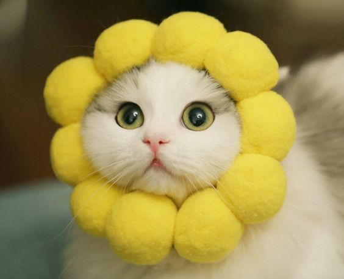
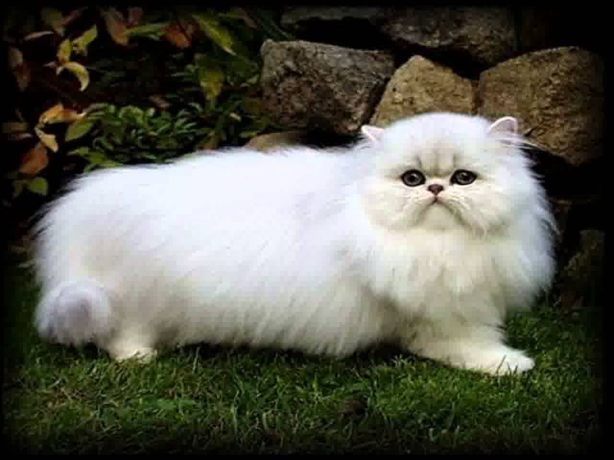
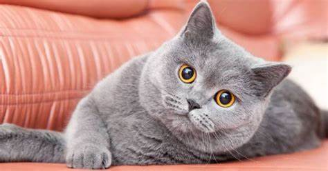
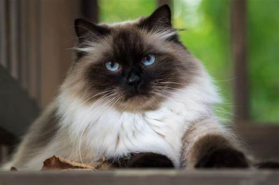
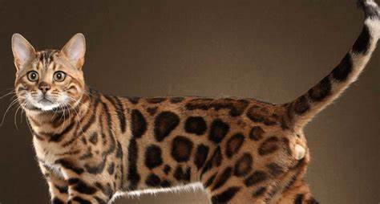
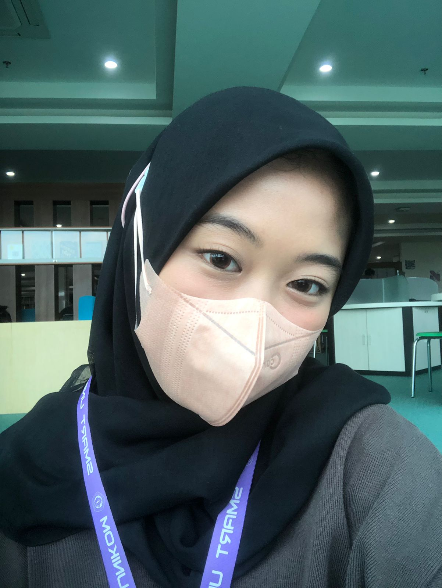

Kucing adalah hewan peliharaan yang banyak sekali diminati oleh orang - orang yang memang dari penampilan fisik yang ukuranya kecil, berbulu, manja dan imut.
Kucing persia adalah ras kucing domestik berbulu panjang dengan karakter wajah bulat dan moncong pendek
British shorthair adalah ras kucing Inggris tertua. Kucing ini dipercaya merupakan keturunan kucing Roma kuno, yang dibawa ke Inggris selama masa invasi.
Kucing himalaya atau kucing persia himalaya (dahulu bernama kucing persia warna poin) adalah salah satu ras kucing domestik yang merupakan hasil persilangan antara kucing persia dengan kucing siam.
Kucing bengal adalah keturunan keempat dari hasil persilangan antara kucing american shorthair dengan kucing asian leopard.
Nama : Yulia Anggiani
TTL : Purwakarta,10 Juli 2003
Hobby : Travelling
NIM : 10121044
Kelas : IF 2
